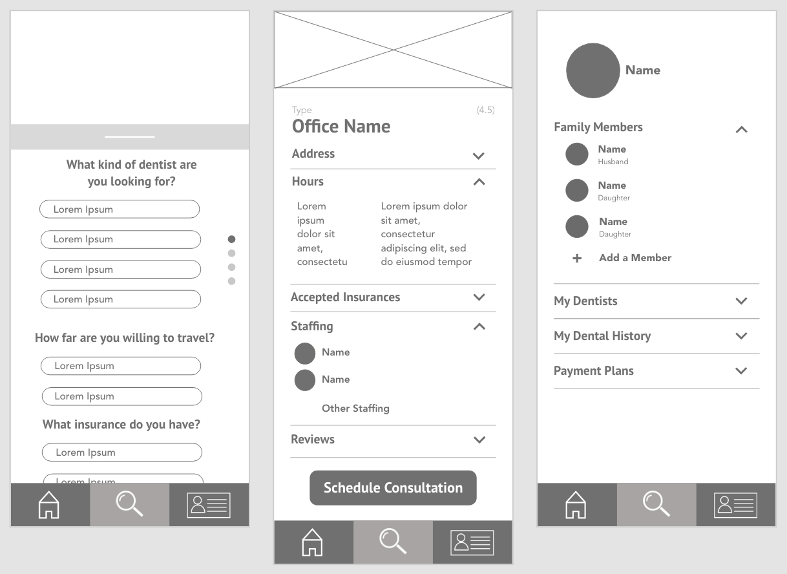

But roughly one quarter of all Americans 65 and older lose all of
their teeth. Children from lower income families are twice as likely
to have tooth decay. And in 2017 it was estimated that over 108
million Americans lived without dental insurance.
Major health care websites suggest when looking for a new dentist
to ask family and friends, neighbors, or coworkers, or if moving,
to ask your current dentist for recommendations. They suggest
calling or visiting numerous dentists before choosing one and
taking into consideration factors like office hours and how far
it is from your work, estimates and prices for care, and most
noteworthy, whether or not they take your dental health plan or
insurance.
Thus, I recognized a need for a centralized location of dental
care information—located in my app Dental Investigator.
The target audience consists of:
1. Americans between the ages of 20 and 65 who are looking for a
new dentist, whether due to a new move, new job, or feelings
of inadequate care from their current dentist.
2. Americans 65 and older, who have recently acquired Medicare
and lost their previous insurance.
In all of these cases, the pain points begin with the dental industry,
as the user lacks important information that could be centralized easily on an app.
Thus, my initial designs and wireframes incorporate all of these pain points,
with a filterable search that focuses on finding a dentist that is accessible,
whether that be one that fits in their schedule or takes their insurance. Additionally,
the Dental Office Page includes reviews left by other patients, staffing, and accepted insurance
types, taking out the need for users to call the office or ask around to find a good dental fit.
Lastly, the personal profile page includes space for a dental history and a payment plan,
which will be another form of communication between patient and dentist, and dentists across the field.
